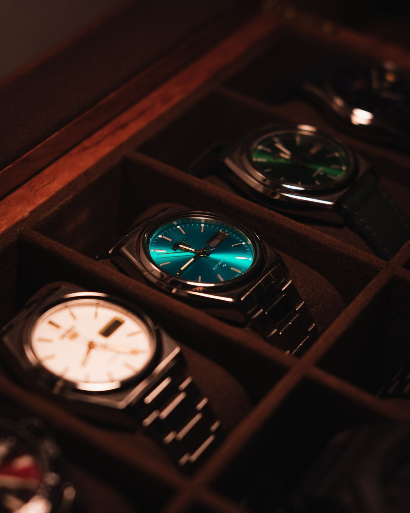
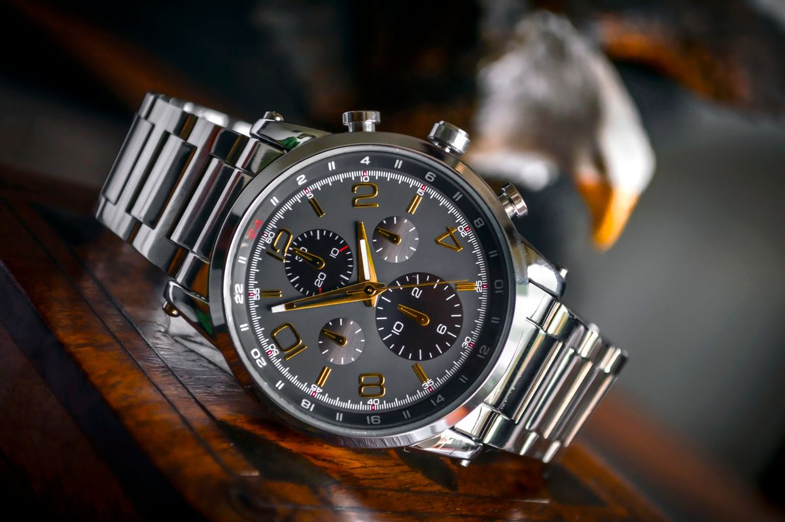
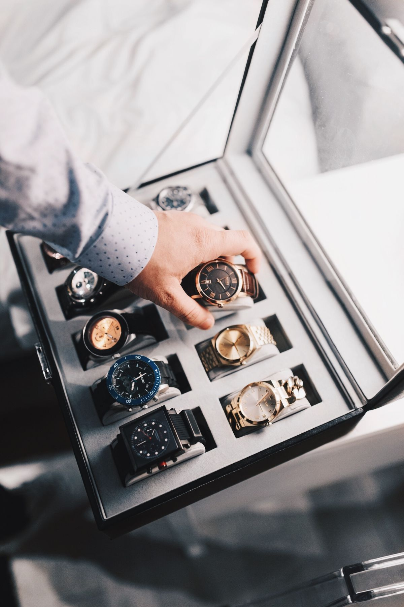

🔮✨ Zodiac & Stars

Bevor die zwölf Tierkreiszeichen zum verspielten Küchenposter wurden, waren sie ein astronomisches Zeitmesssystem: Die sogenannten Shengxiao (生肖) reichen bis in die Zeit der Streitenden Reiche zurück und waren ursprünglich eng mit den „Irdischen Zweigen" verknüpft, einem Kalendersystem zur Zählung von Jahren, Monaten und sogar Doppelstunden. Bis heute spricht man deshalb vom „Jahr des Drachen", statt einfach eine Jahreszahl zu nennen.
Die bekannteste Erklärung für die Reihenfolge der zwölf Tiere ist die Legende vom Großen Wettrennen: Der Jadekaiser rief alle Tiere zu einem Rennen über einen reißenden Fluss — die listige Ratte ritt heimlich auf dem Rücken des Büffels mit und sprang im letzten Moment ans Ufer, weshalb sie bis heute an erster Stelle des Tierkreises steht.
Long before the twelve zodiac animals became a playful kitchen poster, they were an astronomical timekeeping system. The so-called Shengxiao (生肖) date back to the Warring States period and were originally tied to the "Earthly Branches," a calendar system used to count years, months, and even two-hour blocks of the day — which is why people still say "the Year of the Dragon" instead of simply naming a year.
The most famous explanation for the animals' order is the legend of the Great Race: the Jade Emperor summoned every animal to race across a raging river, and the cunning Rat secretly rode across on the Ox's back, leaping ashore at the last moment to claim first place — which is why it still leads the zodiac today.
🎲 Random Group Generator
Der Zufallsgruppen-Generator ist aus einem sehr praktischen Bedürfnis entstanden: In der Schule, bei Workshops oder beim Teambuilding steht man ständig vor derselben Aufgabe — eine Namensliste schnell und wirklich fair in Gruppen aufteilen, ohne dass am Ende immer dieselben Leute zusammen landen. Das Tool nimmt eine beliebige Namensliste (auch direkt aus Excel oder einem Chat kopiert), entfernt auf Wunsch Duplikate und mischt sie in Sekunden entweder nach gewünschter Gruppenanzahl oder nach gewünschter Gruppengröße — ganz ohne Zettel, Hut oder Excel-Formel.
The Random Group Generator grew out of a very practical need: in classrooms, workshops, or team-building sessions, you're constantly facing the same task — splitting a list of names into genuinely fair groups quickly, without the same people always ending up together. The tool takes any list of names (even pasted straight from Excel or a chat), optionally removes duplicates, and shuffles them in seconds either by the number of groups you want or by group size — no paper slips, no hat, no spreadsheet formulas required.
🕐 World Meeting Time Planner
Wer regelmäßig mit Kolleg:innen oder Kund:innen in mehreren Zeitzonen zu tun hat, kennt das Problem: Man rechnet im Kopf hin und her, vergisst die Sommerzeit-Verschiebung und schickt am Ende doch eine Einladung um drei Uhr morgens Ortszeit. Der World Meeting Time Planner löst das visuell — ein Zeitstrahl, den man einfach mit der Maus verschiebt, während sich die Ortszeit in Peking, London, Zürich, New York (oder jeder anderen hinzugefügten Stadt) live mitbewegt, inklusive korrekt berechneter Sommerzeit und farblich markierter Geschäftszeiten.
Anyone who regularly deals with colleagues or clients across multiple time zones knows the problem: you do the math in your head, forget about the daylight-saving shift, and end up sending a meeting invite for 3 a.m. local time anyway. The World Meeting Time Planner solves this visually — a timeline you simply drag with your mouse, while local time in Beijing, London, Zurich, New York (or any city you add) moves along live, with daylight saving correctly applied and business hours color-coded.
📝⌚ 瑞士腕表笔记 · Swiss Watch Notes

Neben den Tools führe ich auch einen redaktionellen Blog aus meinem eigentlichen Berufsalltag: Ich arbeite im Luxusuhren-Einzelhandel in der Schweiz und schreibe „瑞士腕表笔记" (Schweizer Uhren-Notizen) für Käufer:innen von Gebrauchtuhren — mit Artikeln zur Echtheitsprüfung, zum zollfreien Uhrenkauf in Europa und zur Beobachtung des Gebrauchtmarkts, ergänzt um Beiträge zum Alltag in der Schweiz.
Alongside the tools, I also run an editorial blog drawing on my actual day job: I work in luxury watch retail in Switzerland, and I write "瑞士腕表笔记" (Swiss Watch Notes) for secondhand-watch buyers — covering authenticity checks, duty-free watch shopping in Europe, and secondhand market observations, plus posts on everyday life in Switzerland.
Note: the blog itself is written primarily in Chinese.
So findest du dich zurecht
- Nach Rubrik stöbern: Handwissen & Echtheitsprüfung, Europa-Kauf & Zollfrei-Guide, Gebrauchtmarkt-Beobachtung, Schweizer Alltag
- Unter „Kleine Tools" den eingebetteten Gebrauchtuhren-Wertschätzer direkt im Blog ausprobieren
- Neue Artikel per RSS-Feed abonnieren
How to navigate
- Browse by category: watch knowledge & authentication, Europe purchasing & duty-free guide, secondhand market observations, everyday life in Switzerland
- Try the embedded Secondhand Watch Valuator directly from the "tools" section
- Subscribe to new posts via the RSS feed
⌚📈 Watch Price Trends

Wer den Wiederverkaufswert einer Uhr im Blick behalten will, kennt das Problem: Die Preise für gesuchte Modelle wie die Rolex Submariner oder die Daytona schwanken stark und sind über unzählige Händler-Websites verstreut. Watch Price Trends bündelt die wichtigsten Referenzen von Rolex, Omega, Audemars Piguet, Patek Philippe und mehr auf einer Seite — mit Suche, Filtern nach Marke und Preistrend-Pfeilen auf einen Blick. Verfügbar auf Chinesisch, Englisch und Deutsch.
Anyone trying to keep an eye on watch resale values knows the problem: prices for sought-after references like the Rolex Submariner or Daytona swing widely and are scattered across dozens of dealer websites. Watch Price Trends brings the key reference numbers from Rolex, Omega, Audemars Piguet, Patek Philippe and more onto a single page — with search, brand filters, and at-a-glance price trend arrows. Available in Chinese, English, and German.
So benutzt du das Tool
- Oben nach Marke, Modell oder Referenznummer suchen
- Links nach Marke (Rolex, Omega, Audemars Piguet, Patek Philippe …) und nach Stil (Sport- oder Kleideruhr) filtern
- Jede Zeile zeigt den aktuellen Preis sowie einen Pfeil für die Preisentwicklung (▲/▼)
- Sprache oben rechts zwischen 中文 / EN / DE umschalten
How to use it
- Search by brand, model, or reference number at the top
- Filter on the left by brand (Rolex, Omega, Audemars Piguet, Patek Philippe …) and by style (sport or dress watch)
- Each row shows the current price plus a trend arrow (▲/▼)
- Switch language between 中文 / EN / DE in the top right
🧳💶 Europa-Reise Uhren-Steuerfrei-Rechner · Europe Travel Watch Duty-Free Calculator
Eine Uhr im Ausland kaufen und die Mehrwertsteuer zurückholen klingt einfach, ist aber in der Praxis unübersichtlich: Jedes Land hat einen eigenen MwSt.-Satz, einen eigenen Mindestbetrag für die Erstattung und eine eigene, oft nur ungefähr bekannte Bar-Erstattungsquote der Rückerstattungsanbieter. Der Europa-Reise Uhren-Steuerfrei-Rechner nimmt Frankreich, Italien, Deutschland, die Schweiz und Spanien vorkonfiguriert auf, rechnet den Nettopreis nach Erstattung aus und vergleicht ihn auf Wunsch direkt mit dem Ladenpreis im Heimatland — inklusive manuell eingegebenem Wechselkurs, damit klar wird, ob sich der Kauf unterwegs wirklich lohnt.
Buying a watch abroad and claiming back the VAT sounds simple, but in practice it's confusing: every country has its own VAT rate, its own minimum purchase amount for a refund, and its own cash refund rate charged by the refund operators, which is often only roughly known in advance. The Europe Travel Watch Duty-Free Calculator comes preloaded with France, Italy, Germany, Switzerland, and Spain, works out the net price after the refund, and can compare it directly against the home-country retail price — using a manually entered exchange rate — so it's clear whether buying on the trip is actually worth it.
So benutzt du das Tool
- Kaufland auswählen — MwSt.-Satz und übliche Bar-Erstattungsquote werden automatisch vorausgefüllt (oder selbst eintragen)
- Ausgezeichneten Preis der Uhr eingeben
- Das Ergebnis zeigt Endpreis nach Erstattung, enthaltene MwSt. und geschätzte Bar-Erstattung
- Optional: Heimatpreis und Wechselkurs eintragen, um die tatsächliche Ersparnis im Vergleich zum Kauf zuhause zu sehen
- Nur zur Reisebudget-Orientierung, keine Steuer- oder Rechtsberatung
How to use it
- Choose the country of purchase — VAT rate and typical cash refund rate fill in automatically (or enter your own)
- Enter the watch's ticket price
- The result shows the final price after refund, the VAT included, and the estimated cash refund
- Optional: enter the home-country price and exchange rate to see the real savings versus buying at home
- For trip-budgeting guidance only — not tax or legal advice
⌚💰 Gebrauchtuhren-Wertschätzer · Secondhand Watch Valuator

Die Frage, die auf den Preisvergleich fast immer folgt, ist: „Was ist meine eigene Uhr eigentlich noch wert?" Der Gebrauchtuhren-Wertschätzer beantwortet das mit einem heuristischen Modell, das Marke, Modell, Material, Besitzdauer, Zustand sowie Box & Papiere berücksichtigt und daraus eine grobe Werterhaltungs-Einschätzung errechnet — als Startpunkt für ein Verkaufsgespräch, nicht als offizielles Gutachten. Das Tool gibt es auch eingebettet direkt im Uhren-Blog und ist ebenfalls auf Chinesisch, Englisch und Deutsch verfügbar.
The question that almost always follows a price comparison is: "so what is my own watch actually worth now?" The Secondhand Watch Valuator answers that with a heuristic model factoring in brand, model, material, years of ownership, condition, and box & papers to produce a rough value-retention estimate — a starting point for a resale conversation, not a formal appraisal. It's also embedded directly inside the watch blog, also available in Chinese, English, and German.
So benutzt du das Tool
- Marke und Modell auswählen — der Basiswert wird automatisch übernommen
- Material, Besitzdauer, Zustand sowie Box & Papiere angeben
- Gewünschte Währung wählen (USD, EUR, CHF, CNY)
- Das Tool zeigt eine geschätzte Werterhaltung in Prozent
- Hinweis: heuristische Schätzung, kein offizielles Gutachten
How to use it
- Choose the brand and model — the base value fills in automatically
- Specify material, years of ownership, condition, and box & papers
- Pick your currency (USD, EUR, CHF, CNY)
- The tool shows an estimated value-retention percentage
- Note: a heuristic estimate, not a formal appraisal